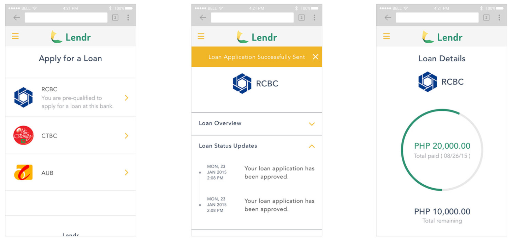
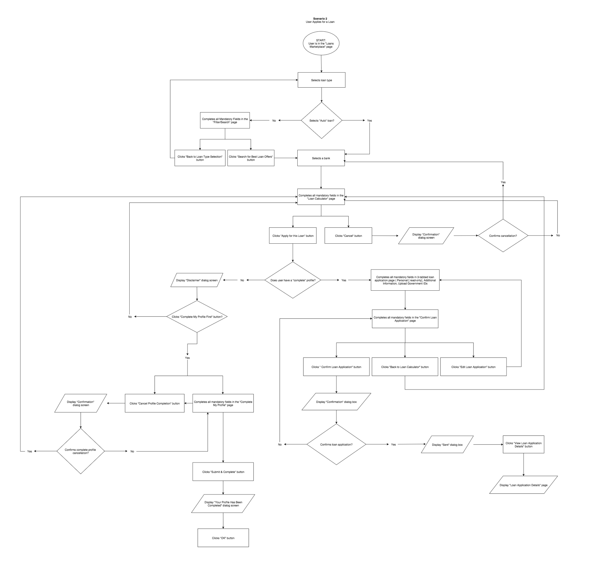
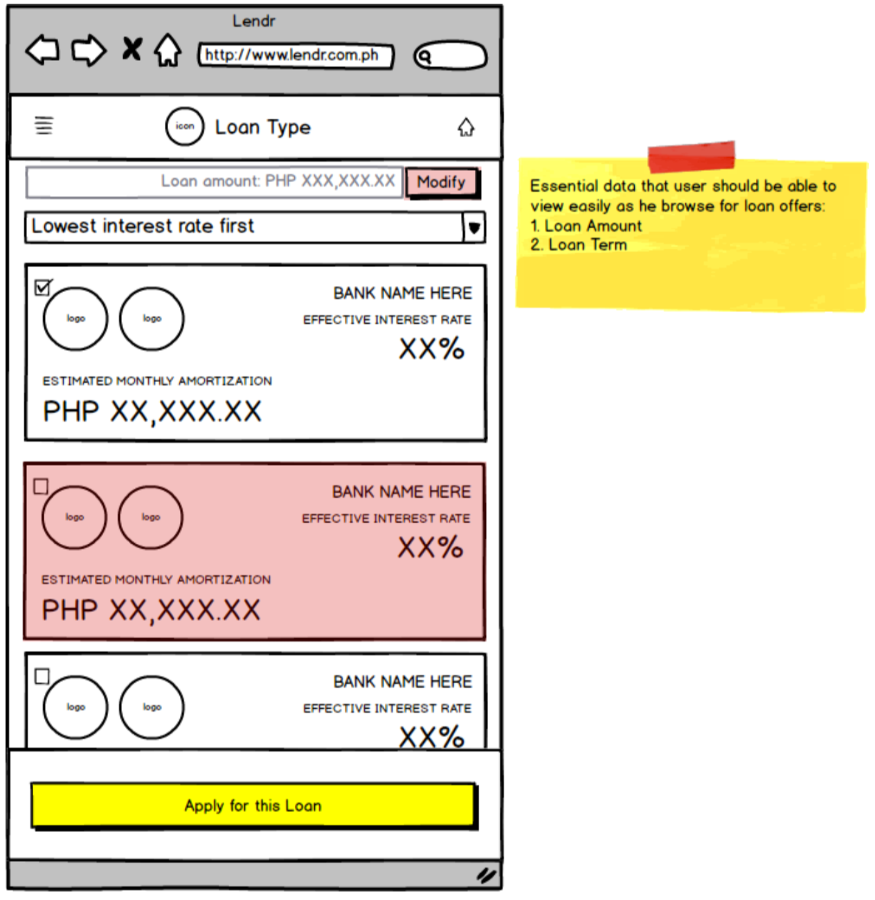
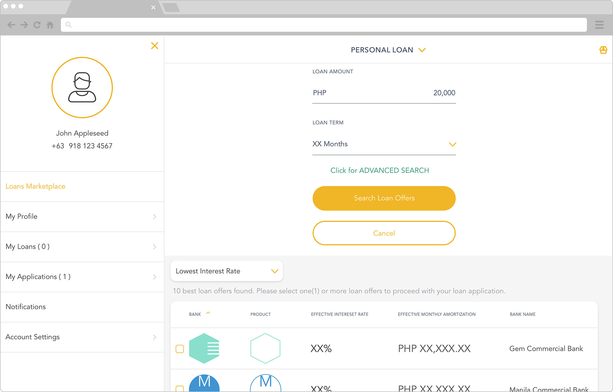
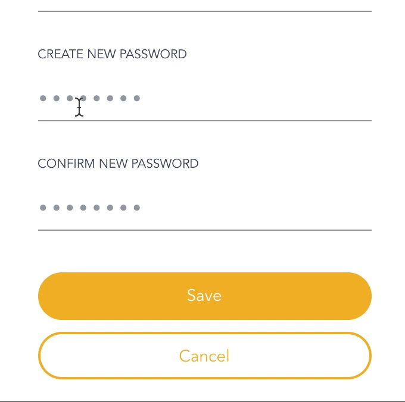

Lendr Web App
End-to-end loans marketplace and loan management web-application

Introduction
Lendr is an online loans marketplace that allows multiple loans applications from different banks in just one go. Users can even monitor their monthly amortization inside the app.
Lendr is a product of Fintq, the Fintech subsidiary of Voyager Innovations Inc.. It’s an innovation effort of Fintq to make loans application in the Philippines more accessible by making it 100% digital and remote. It is web-based and fully responsive to make sure that loan applicants without a computer but with a digital mobile phone that supports a web-browser can have access to the app.
...
Case Study
...
I. Identifying the Problem
Carla is a 36 year-old single mom and public school teacher who lives on a sub-urban area in the Philippines.
A few months ago, she had been notified by her bank that she had been pre-qualified to apply for a personal loan. However, due to her tight schedule at school and at home, she never had the time to drop by her bank to process her loan application.
One day, as she was taking a lunch break at work, she received a text-message from her bank informing her that their loan application is now accessible online through the app called “Lendr” and that going to the bank is no longer required. Excited about the good news, she immediately tried applying for the loan via Lendr when she got home.
...
II. Challenges and Solutions
1. Sudden growth of scope.
During its first few months of development, the app’s product requirement drastically scaled up. At the time of the scope adjustment, the dev team’s size was not immediately adjusted to meet the project’s demand. This resulted the devs to focus on the main functionalities which in return resulted to some neglected user-flows which seemed unimportant but are crucial to achieve the best UX for the app. These are the confirmation dialog-boxes and and system feedback.
Initial version was very simple; white-listed users can select from a list of partnered banks and complete the application form to apply for a loan. They can later monitor their amortization in the app once approved.
User-flow diagram that was communicated throughout the team. It was used to help everyone in the team be aligned to what screen lead to what and which system feedback are needed in every corresponding user actions.
However, usage of the user-flow diagram was ineffective in our case since it was often neglected during the development.
We printed out each screens to show the flow and laid them down on a board. This was an effective way for the team to discuss and review the flow.
2. Business requirements vs best UX.
At an earlier stage of finalizing the Lendr app, the business required to capture around 30 fields of user information upon registration. The team successfully settled to put these fields on the last part of the loan application and left for the serious applicants. This ensures that it will not block users from seeing the loans marketplace at the earlier stage of application.
Fields are segmented into smaller parts which users can save individually.
Wireframe version.
Complete Profile's desktop version.
Lendr evolved into a one-stop loans marketplace that has a capacity to on-board any type of bank and any type of loan. It allows multiple loan application for a single user in one form submission.

Loans Marketplace wireframes.
On the desktop version, loans are displayed in a tabular format to maximize desktop’s horizontal space. Lacking the mouse-hover interaction in the mobile version, loans are displayed on cards to make it more obvious to be tappable.
Quick search is readily available by just clicking the link of loan amount and loan term.
3. Forms validation.
Fields are validated real-time as users type. This guides users to what they need to input in a field and reduces their chance of receiving an error upon form submission.
Implemented form validation for password fields.
4. In-app loan monitoring.
After successful loan application, users can monitor their application inside the app. Once approved, they get notified through text-message and in-app notification.
With their active loans, users are reminded of their next due date for each loans and can also easily track their loan amortization by viewing their loan summary and amortization table.
5. Maintaining design consistency up to production.
To avoid using too many color hex during the actual development, we defined a pre-set of colors from the earliest stage of design. Setting this limitation also helps maintain Lendr's clean and minimal design.
Icons are also standardized to create a coherent design voice across the app.
...
III. Conclusion
Lendr makes loan application more accessible to every Filipino through its 100% paperless and remote loan application. Its loans marketplace and multiple loan application in one go gives Filipinos more options and chances to be approved for a loan in the shortest possible time.
...
IV. Remarks
Since it’s first launch back in 2016 in helping working class Filipinos get easier access to loans application, Lendr had won for itself various awards from different award-giving bodies:
Winner for Consumer Finance Product of the Year 2017 by The Asian Banker
Winner for Most Innovative Fintech Collaboration 2017 by The Asset Triple A Digital Awards


...
V. What Could Have Been Done Better?
User-research and more usability testing could have been initiated during the iteration process that could have solidified which features of the app are really helpful for the users and what features and flows can be added/removed and further improved to enhance not just the app but the whole UX of the loan-application.
...
Background
Company:
Voyager Innovations Inc.
Project duration:
Nov 2015 - Jan 2017 (14 months)
App’s URL:
Role:
UX/UI designer
Logo Designer
Responsibility:
- Designed the over-all UX and UI from earliest stage upto its launch.
- Designed app's logo and created a document for its branding guidelines
- Collaborated directly with the client and product owner to ensure that the UI meets the business requirements while maintaining best possible UX.
- Collaborated directly with the product engineering team to provide all necessary assets, style guide; also ensured consistency in design on actual implementation.
For it is God who works in me,
both to will and to work for his good pleasure. - Phi 2:13